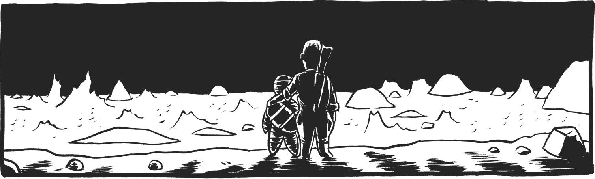
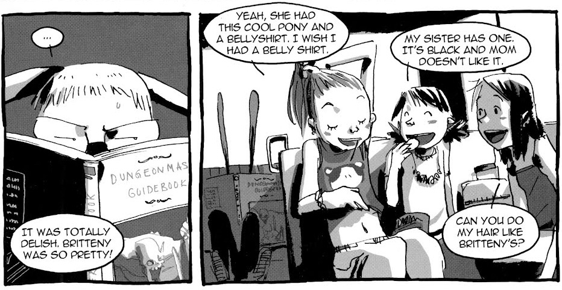

January 2014
Heck
Zander Cannon
Curated by Dylan Todd

The high concept is this: Hector Hammarskjold (who bears more than a passing resemblance to pulp hero Doc Savage) found a portal to Hell in his dead dad's basement and, being a savvy businessman with a reckless streak, goes about starting a business to travel to the land of the dead on the behalf of families of the recently deceased. You know, to help settle inheritance disputes, help families get closure; that sort of thing. That's the setup, but it's not what Heck is about. Zander Cannon's underworld epic is about regret and friendship and betrayal and love and sacrifice. It's haunting, funny, smart and amazingly illustrated. It's a Heck of a ride oh man I am sorry that was terrible please don't leave I apologize...
October 2013
I Kill Giants
Joe Kelly & J.M. Ken Niimura
Curated by Joe Keatinge

Whenever I'm asked by someone new to the medium what comic book they should read as an intro, I Kill Giants is always my first pick for a number of reasons.
I feel a lot of the general go-tos for people's first comic can be a bit more alienating than a die hard comic book reader realizes. Watchmens's fantastic and while I know people who got into comics through it, I do feel it's generally a bit much to take on for the first time. Furthermore, I feel the collaboration of Niimura and Kelly illustrates why I love collaboration through comics so damn much. They are two people of extremely different backgrounds, generally different styles, coming together to create something that wouldn't exist on Earth without both of them existing at the same time, synthesizing together to create this work.
More specifically, Barbara Thorson's emotional journey is also one any person who has ever known love and loss can relate to -- which I'm fairly certain is any person on Earth. Her actual journey is consists of equal parts wonder, horror, heartbreak, inspiration. It's a great embodiment of the mechanics of comics, showing the infinite range of emotions and possibilities one can convey with the medium. Furthermore, I feel I KILL GIANTS is one of the most beautiful testaments to human existence I've ever read in any format. That being said, I don't see it talked about enough, so it's a true honor to be able to share it with everyone on Pulllist.